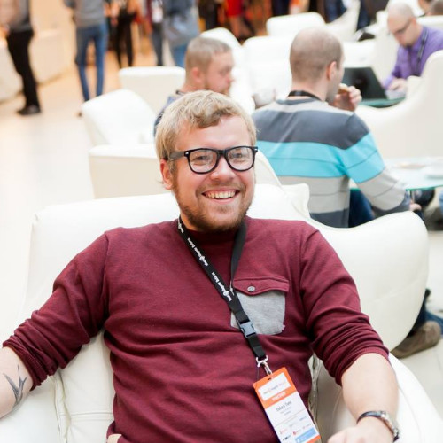
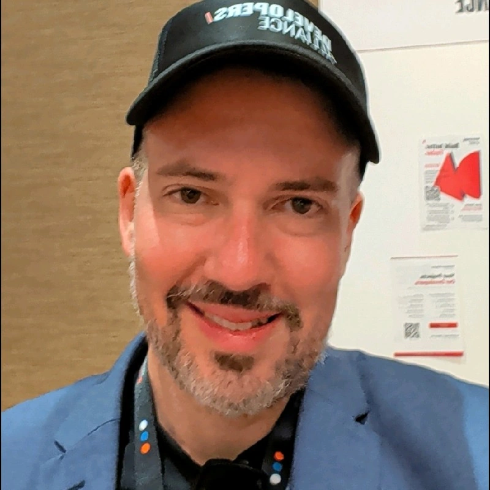
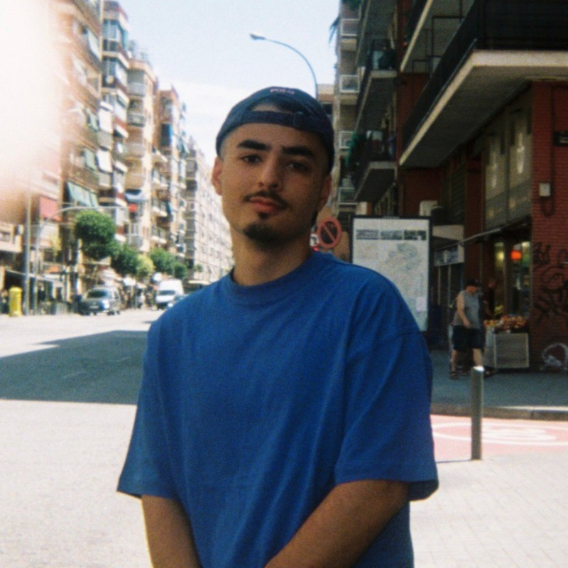

დეველოპერებისა და დიზაინერების მრავალფეროვანი გუნდი, რომლებიც ჰარმონიულად მუშაობენ საქართველოს ციფრული ლანდშაფტის თავიდან შესაქმნელად.
მისია "გააციფრულე საქართველო" დაფუძნდა თბილისის ფიზიკური ბიზნესებისა და დამოუკიდებელი მეწარმეებისთვის ციფრული უთანასწორობის აღმოსაფხვრელად. ჩვენ დავინახეთ, რომ მიუხედავად ქალაქის ენერგიულობისა, ბევრ ადგილობრივ ბიზნესს აკლია პოსტ-პანდემიურ ეკონომიკაში კონკურენციისთვის საჭირო ციფრული ინფრასტრუქტურა — თანამედროვე დიზაინი, ვერიფიცირებული რეგისტრაცია და საიმედო ჰოსტინგი.
ჩვენი მოდელი: მაღალეფექტური
მენტორობა
ჩვენ ვმოქმედებთ როგორც ციფრული ხიდი. ადგილობრივი ბიზნესებისთვის პროფესიონალური ვებ-სერვისების
სრულიად უფასოდ შეთავაზებით, ჩვენ ვქმნით რეალურ გარემოს საქართველოს დამწყები ტექნოლოგიური
ტალანტებისთვის, რათა მათ განივითარონ უნარები. თითოეული პროექტი არის კოლაბორაცია:
ბიზნესებისთვის: თქვენ იღებთ პროფესიონალურ, SEO-ზე ოპტიმიზებულ ვებსაიტსა და
ჰოსტინგს, რაც ხსნის ონლაინ სივრცეში გადასვლის ტექნიკურ და ფინანსურ ბარიერებს.
ტალანტებისთვის: ჩვენი სტაჟიორები იღებენ პრაქტიკულ გამოცდილებას Front-end
დეველოპმენტსა და ციფრულ სტრატეგიაში, უშუალოდ Developers Alliance-ის გამოცდილი (Senior)
ხელმძღვანელების მენტორობით.
ადგილობრივი ეკონომიკის გაძლიერება ჩვენ გვჯერა, რომ როდესაც ადგილობრივი კაფე, ხელოსანი ან მაღაზია წარმატებას აღწევს ონლაინ, მთელი საზოგადოება იზრდება. "გააციფრულე საქართველო" არის ჩვენი გზა, ინვესტიცია ჩავდოთ იმ ქუჩებში, სადაც ყოველდღე დავდივართ — სათითაო ვებსაიტით.
დეველოპერებისა და დიზაინერების მრავალფეროვანი გუნდი, რომლებიც ჰარმონიულად მუშაობენ საქართველოს ციფრული ლანდშაფტის თავიდან შესაქმნელად.

პროექტის ხელმძღვანელი
ოსკარსის კარიერა ლატვიაში დაიწყო, სისტემებისა და პროგრამირების მიმართ მისი ცხოვრებისეული გატაცების შედეგად. 2012 წელს საქართველოში გადმოსვლის შემდეგ, მან წლები დაუთმო ადგილობრივი სამეწარმეო გარემოს შესწავლას, სანამ 2019 წელს Developers Alliance-ს დააარსებდა. დღეს კომპანია სთავაზობს მაღალი დონის ექსპერტიზას ელ-კომერციასა და ხელოვნურ ინტელექტში (AI) გლობალურ სააგენტოებს. გააციფრულე საქართველო არის გუნდის ერთგულება თბილისის მიმართ — მათი ტექნიკური ოსტატობის გამოყენება ადგილობრივი საზოგადოების გასაძლიერებლად მენტორობისა და ციფრული მოხალისეობის გზით.

ციფრული სტრატეგი
შონი საქართველოში პირველად 2009 წელს, მშვიდობის კორპუსთან ერთად ჩამოვიდა და ცხოვრება მარკეტინგისა და ტექნოლოგიების კვეთაზე ააშენა. როგორც SEO-სა და AI-ზე დაფუძნებული სტრატეგიების სპეციალისტმა, შონმა შენიშნა მზარდი ციფრული უფსკრული ადგილობრივ ბაზარზე — სადაც ბევრ ბიზნესს არ ჰქონდა რესურსი სათანადო ონლაინ იმიჯის შესანარჩუნებლად. სწორედ ამან გააჩინა გააციფრულე საქართველოს იდეა. მაღალი დონის ციფრულ სტრატეგიებსა და ადგილობრივი საზოგადოების საჭიროებებს შორის ხიდის გადებით, შონის ინიციატივა თბილისის ბიზნესებს აწვდის სასიცოცხლოდ მნიშვნელოვან ვებ სერვისებს და ამავდროულად ეხმარება ქართული ციფრული ტალანტების მომავალ თაობას.

ვებ დიზაინერი
ნიჭიერი დიზაინერი, რომელიც დეტალებზეა ორიენტირებული. გიორგი თითოეულ ვებსაიტს დიდი ზრუნვითა და კრეატიულობით ქმნის. ის სპეციალიზდება ისეთი ინდივიდუალური დიზაინის შექმნაში, რომელიც ასახავს თითოეული ბიზნესის უნიკალურ ხასიათს. მისი ნამუშევრები აერთიანებს თანამედროვე ვებ დიზაინის პრინციპებს იმ ელემენტებთან, რომლებიც საუკეთესოდ წარმოაჩენს ქართულ კულტურასა და ესთეტიკას.

15+
წლიანი
გამოცდილება
ორგანიზაცია
Developers Alliance არის წამყვანი ტექნოლოგიური კომპანია, რომელიც დაფუძნებულია თბილისში, საქართველოში. ჩვენ გვაქვს 15 წელზე მეტი გამოცდილება ვებ დეველოპმენტში, ციფრულ გადაწყვეტილებებსა და AI ინტეგრაციებში. ჩვენ წარმატებით განვახორციელეთ ასობით პროექტი კლიენტებისთვის მთელი მსოფლიოს მასშტაბით, დაწყებული სტარტაპებიდან დამთავრებული მსხვილი კორპორაციებით.
პროექტი "გააციფრულე საქართველო" წარმოადგენს ჩვენს მზაობას, დავუბრუნოთ სიკეთე იმ საზოგადოებას, რომელიც მხარს გვიჭერდა ჩვენი განვითარების გზაზე. ჩვენ გვჯერა, რომ ადგილობრივი ბიზნესების პროფესიონალური ციფრული ინსტრუმენტებით გაძლიერებით, ჩვენ ინვესტიციას ვდებთ საქართველოს მომავალში.
ჩვენი გუნდი აერთიანებს ტექნიკურ ექსპერტიზას ქართული კულტურისა და ბიზნეს პრაქტიკის ღრმა ცოდნასთან, რაც უზრუნველყოფს იმას, რომ ჩვენს მიერ შექმნილი თითოეული ვებსაიტი იდეალურად ერგებოდეს როგორც ადგილობრივ აუდიტორიას, ისე საერთაშორისო სტანდარტებს.
კორპორატიული პორტფოლიო